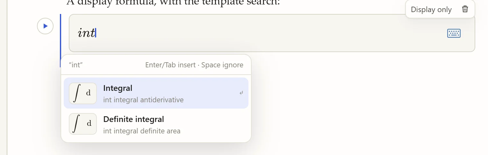
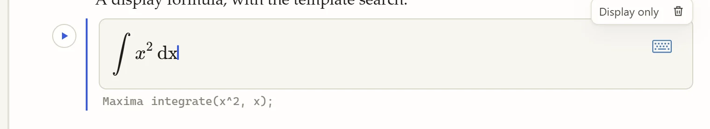
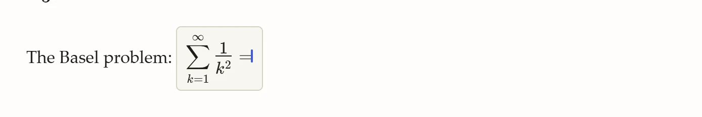
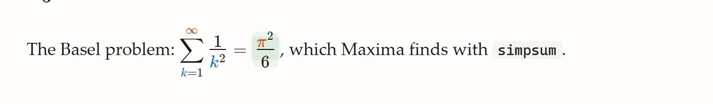
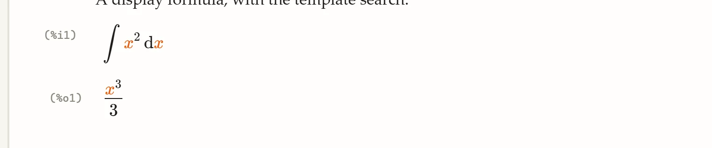

Computing with formulas
Formulas in Maxbook are written visually, like in a word processor’s equation editor, and Maxima understands them. This page shows how to write them quickly and the three ways to compute with them.
Inline and display formulas
-
Type
$in your text for a formula inside a sentence. -
Type
$again in an empty formula, or press Ctrl+Shift+M, for a display formula on its own line. -
Ctrl+M also starts an inline formula, and the format bar has buttons for both.
Leave a formula with Esc, Enter (inline formulas), or → at its end. Click a formula to edit it again.
Templates: type a word
Inside a formula, type a word such as int, frac, sum, prod, lim, sqrt, matrix, det, binom or abs.
A list of matching templates opens:

Press Enter or Tab to insert the highlighted template, ↑ and ↓ to choose another, or Space to keep the letters as they are. A template has empty boxes; Tab moves from one to the next (the box you are in is highlighted). Once no empty box is left, Tab does what it does in any formula: compute or leave it.
While you edit a display formula, the line under it shows the Maxima input the formula stands for:

If the formula is not complete yet, the line says what is missing instead (for example "integral is missing its differential (dx)"), so you always see what will be evaluated before anything runs. The rules are listed in Formula syntax.
Some letter pairs are left alone on purpose: gt stays g·t and in stays i·n, because in a notebook they are usually products of two variables.
Function names (sin, ln, exp…) and Greek letters (alpha, pi…) still turn into their symbols as you type.
|
Three ways to compute
1. Compute in place: = then Tab
End a formula with = and press Tab.
Maxima’s value appears right after it, highlighted:


Asking for a value means "work it out": integrals, derivatives, limits and sums written as formulas are evaluated (Maxima’s nouns and simpsum), which is why the infinite sum above gives π²/6 rather than the sum again.
If Maxima cannot translate or evaluate the formula, a ⚠ appears instead; hover it to read the message.
2. Definitions: := then Tab
A formula with := defines something in Maxima:
-
a := 3defines a variable (Maxima’sa: 3), -
f(x) := x^2 \sin xdefines a function.
A green ✓ confirms the definition. Everything below can use it: other formulas, Maxima blocks and plots.
3. Evaluated display formulas: Shift+Enter
In a display formula, Shift+Enter turns it into an evaluated formula: Maxima runs it like a Maxima block and shows the result below it, with its label.

The button at the top right of the block switches between Evaluated and Display only. A display-only formula is just typeset mathematics: nothing is sent to Maxima.
Run all
Run all (or Ctrl+Shift+Enter) goes through the document from the top and recomputes, in order:
-
every Maxima block,
-
every display formula marked Evaluated,
-
every formula ending in
=or containing:=.
It stops at the first error and scrolls to it.
Tips
-
Ctrl+K searches all templates, also from outside a formula.
-
A formula ending in
=that you do not want computed is fine: it only computes when you press Tab in it or use Run all. -
In formulas,
eis Euler’s number,\piis π, and a plainiis a variable; use the template search for the imaginary unit (imag). -
Use a Maxima block for anything that is not one expression: loops, several statements, options such as
ratprint: false.